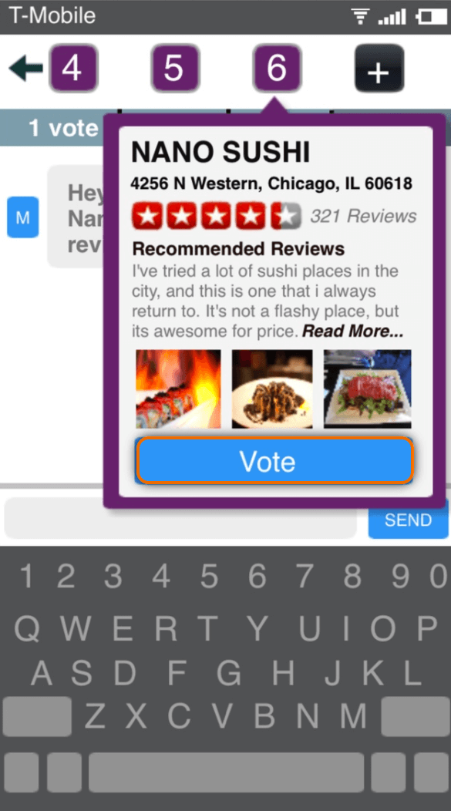
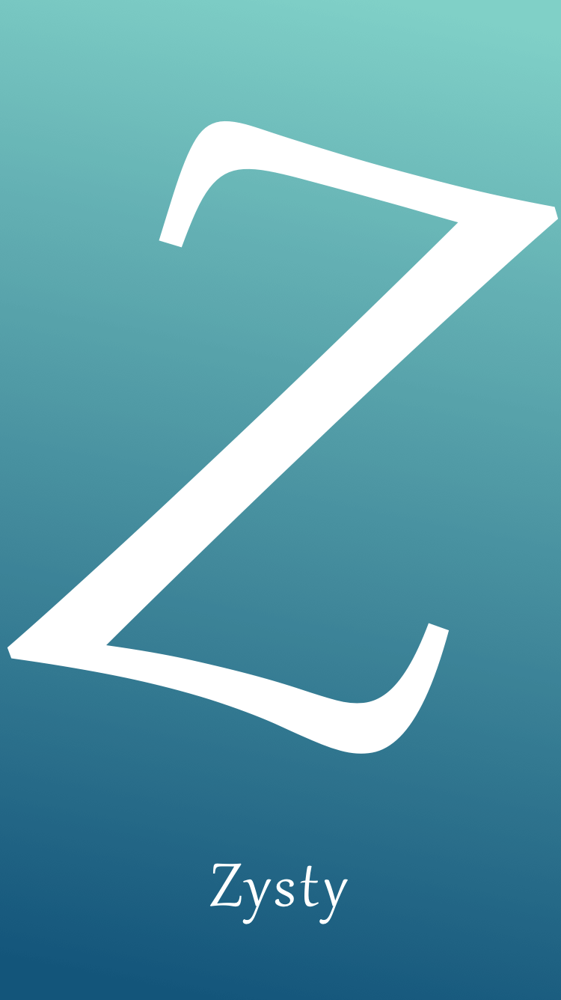
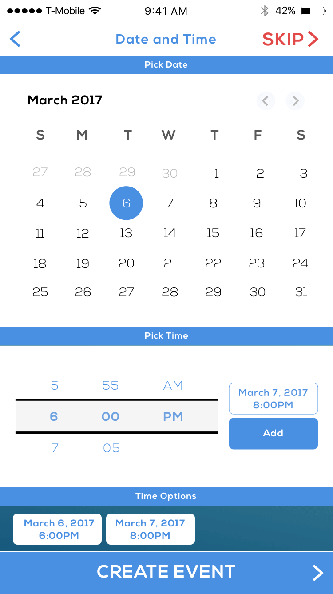
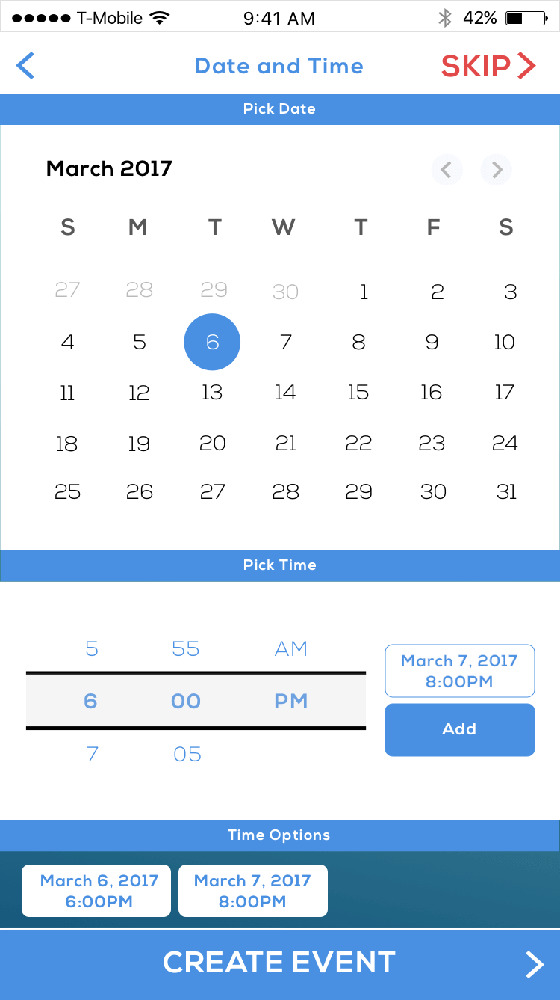

Zysty: Analyzing the Event Coordination Space


The Backstory
My sophomore year at Northwestern, I took my first entrepreneurship class and I loved it. It wasn’t that I felt a class could teach me how to start a company, but I loved that I could get credit for something I'd likely work on even if I wasn't in a class.
I worked on an app called Zysty, an event-focused messaging app that incorporated micro-services. For instance, users could vote on activity options, see Yelp reviews, and make a reservation via OpenTable or call an Uber - all within the app. I worked on the idea for more than a year after my class ended. As a result of more than a year of customer development, market research, and wireframe testing (see the 2013 version below), I have a strong understanding of this space. I wanted to share some thoughts on why I stopped working on Zysty and how I think this space will play out.
Zysty in 2013
Zysty in 2017


 



The Idea
I want to share a graphic I made to showcase the problem Zysty was addressing in the first place. Namely, Zysty was about reducing friction in the event coordination space. As you can see, there's a lot of friction between wanting to hang out with friends and ultimately spending time with friends.

Multidimensional Problem
By far, the biggest issue with making something like Zysty come to life is clearly defining the pain point. For my class, I interviewed and surveyed 300 people asking them about the difficulties involved in planning hangouts out with friends. I got incredibly diverse answers. However, they essentially fell into one of three major categories: people, places, or time. Even within these areas, there’s a variety of issues that are relevant.
For instance: Who would be interested in this event? Who should I invite? How can I meet new people through my current friends? What can I do about that one friend who always bails?
And: Where should we go? What are popular things to do in this area at this time? What are some deals on places I can go? What are the best restaurants? Who wants to go where?
Or: When is this event occurring? When is everyone free? Is this place open when we’re free?
Seeing as there are so many different user scenarios that all fall under the event coordination space, there are two approaches. The first approach is to pick a single scenario and address it really well. However, the problem with this is that there are already other apps that address many of these singular problems fairly well. For instance, want to figure out when everyone is free? Use Doodle or When2Meet. Likewise, addressing these singular issues limits the market and subsequently, the opportunity.
The second approach is to try and address as many of these user scenarios as possible while keeping it simple, which is the approach Zysty and most other apps take. However, in practicality, this becomes an app filled with many features and no clearly defined value proposition. This leads to an okay product that isn’t 10x better than the status quo, which in this case is messaging friends and doing things manually. Simply put, what is the killer functionality that compels someone to download the app? Depending on which problem you’re solving, that answer is different.
Competitive Space
Once you realize that any events app must include a messaging component to let users communicate event details, you realize that, at its core, Zysty has to be a messaging app. As a result, you face the problem of convincing users to download ‘yet another messaging app’. You face the same app fatigue that all messaging apps face: it’s a competitive, saturated market and users are hesitant to download another app for almost the same purpose. The most common feedback I received from users was ‘this would be a really cool feature on an existing messaging app.’ I think users are on to something meaningful here but more on that below.
Low Usage Frequency
Assuming you could somehow get 5 million users, the app would still suffer from low-frequency usage since most users would be using Zysty at most once or twice a week.
Network Effects
The challenge of getting users to download an app that only has value once their friends are on it is hard to understate. This is the main reason why users want something like Zysty as an add-on to existing services, which provide a large fraction of the packaged value.
Monetization
I haven't spent much time reading or thinking about monetization for Zysty since it’s really only relevant once and only if you are able to get a sizable user base. However, since much of the value of the app is based on micro-services that utilize external data via APIs, it’s likely that there would eventually be revenue sharing with data providers. Personally, monetary considerations always feel premature unless you have a path to 100M users. The fact of the matter is, a product like Zysty is almost always monetized through some form of advertising or revenue share on a transaction basis. It's hard to get too creative with this business model. Yet, it’s worth noting that you actually can’t generate revenue until you achieve a sizable user base since vendors likely won’t care to work with you.
Snapchat and Vurb

One of the main reasons I stopped working on Zysty was that I came across a startup, Vurb, that I felt was going to do exactly what Zysty set out to do and do it well. Vurb was an event-focused messaging app that let users share activities cards.1 I wasn’t sure how exactly it would pan out but I knew I didn’t have the resources to compete with a well-funded startup run by experienced founders.
Vurb went on to raise $10M dollars and was acquired by Snap for $175M in August 2016. Hearing about the Snap acquisition made perfect sense to me especially when I found out 2 things: 1) Vurb didn't really have traction, and 2) Snap paid $75M to retain Bobby Lo, the founder. If Vurb wasn’t actually able to crack the market and get traction, why did Snap acquire them? My belief is that Snap would like to incorporate Vurb/Zysty’s features into Snapchat and wants to bring in the teams' expertise to build it within Snapchat. Unlike anyone who tries to build Vurb/Zysty from scratch, Snap already has 150M+ users who are using the app in a way that naturally extends to facilitating hangouts.
Snap benefits from increasing its appeal to a growing, older demographic. Likewise, it opens the way for them to add additional revenue streams once users are utilizing these features. Meanwhile, they are best positioned in the messaging space to address this problem because friends hanging out is entertainment, which falls squarely under Snapchat’s ‘media and entertainment’ appeal. Messenger, WhatsApp, GroupMe, etc. could all create this same functionality (which they are ever so closely inching towards, as shown below), but Snapchat is where users go to be their most authentic selves. There's nothing snazzy about coordinating a hangout with friends, nothing to share or post, except maybe sharing a snap at the end. Likewise, when it comes to media and entertainment, users expect a design-first product, which is one of Snap's core competencies over its competitors.
Conclusion
I am not the only one who has ventured into this space and come to these conclusions about the viability of this space. Adam Waxman, who founded Flock , built a similar product and wrote a post-mortem sharing similar insights on why this is such a hard space. Actually, there are 2 more products worth mentioning. Soon, which was recently released by Matt Mazeo of LowerCase Capital, and WeVyte, which is run by Blaine Farr. I had a chance to speak with someone at WeVyte and he echoed similar concerns in their experience so far (e.g. low usage frequency, etc.) I think what’s really exciting is Snapchat moving into this space. I'm curious to see how they tackle this problem and what this functionality might look like as an add-on to Snapchat.